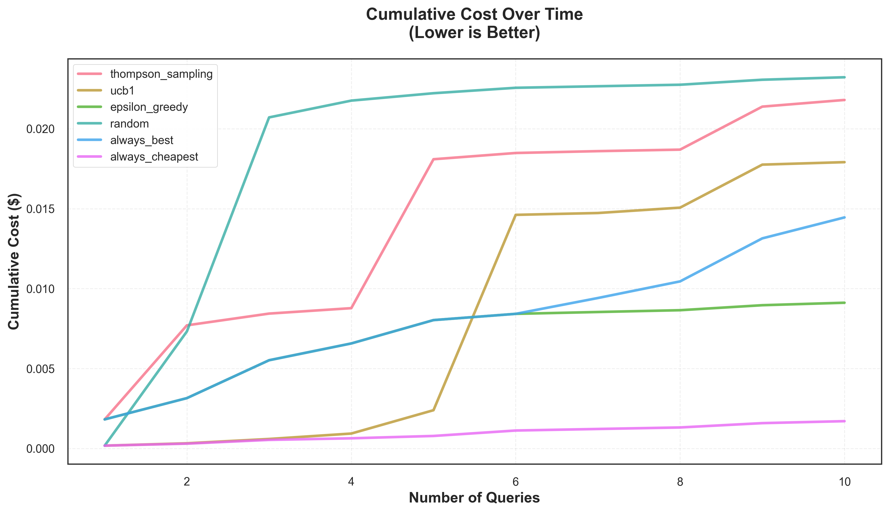
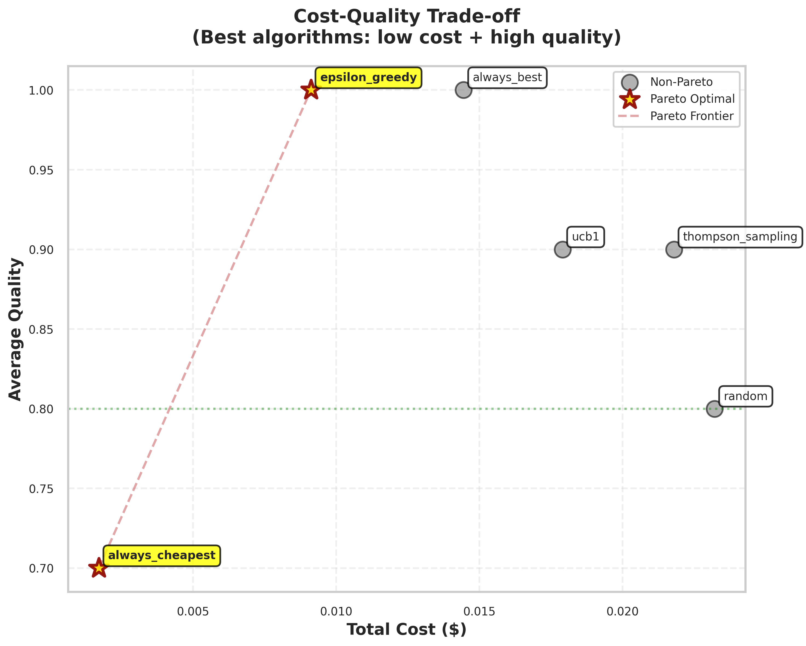
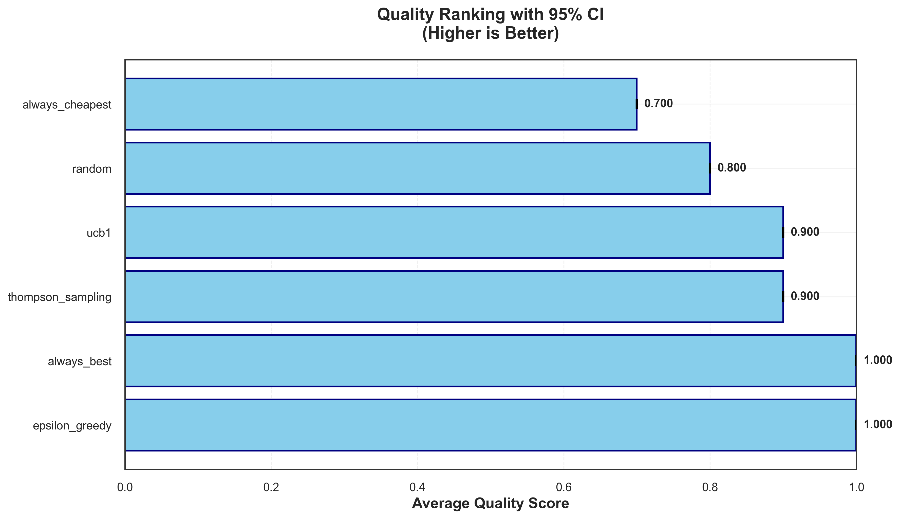

🎯 Conduit Benchmark Report
Executive Summary
Benchmark ID: f101f4e9-4808-4933-b8dc-7427ecfa6c2f
Dataset Size: 10 queries
Algorithms Tested: 6
🏆 Pareto Optimal Algorithms
The following algorithms achieve optimal cost-quality trade-offs:
- epsilon_greedy
- always_cheapest
📊 Algorithm Performance
| Algorithm | Avg Quality | 95% CI | Total Cost | Cum. Cost | Converged |
|---|---|---|---|---|---|
| thompson_sampling | 0.900 | [0.700, 1.000] | $0.0218 | $0.0218 | Never converged |
| ucb1 | 0.900 | [0.700, 1.000] | $0.0179 | $0.0179 | Never converged |
| epsilon_greedy | 1.000 | [1.000, 1.000] | $0.0091 | $0.0091 | Never converged |
| random | 0.800 | [0.500, 1.000] | $0.0232 | $0.0232 | Never converged |
| always_best | 1.000 | [1.000, 1.000] | $0.0145 | $0.0145 | Never converged |
| always_cheapest | 0.700 | [0.400, 1.000] | $0.0017 | $0.0017 | Never converged |
📈 Visualizations
Cumulative Cost Curves
Cost-Quality Trade-off
Convergence Speed

Quality Ranking
Statistical Analysis
Friedman Test: No significant differences (p = 0.4159)
📚 Appendix: Metrics and Statistical Tests
Convergence Detection
What it means: Convergence indicates that an algorithm has learned enough to make stable, consistent decisions. A converged algorithm is no longer significantly improving its strategy.
How we detect it: We use slope-based analysis on smoothed learning curves. An algorithm is considered converged when the slope of its quality improvement falls below 10% (nearly flat learning curve), indicating minimal further learning.
- Converged (✓): Algorithm has stabilized and learned an effective strategy
- Not Converged (✗): Algorithm is still learning or hasn't seen enough data
Pareto Frontier (Optimal Trade-offs)
What it means: The Pareto frontier identifies algorithms that achieve optimal cost-quality trade-offs. An algorithm is Pareto optimal if no other algorithm has both lower cost AND higher quality.
Interpretation:
- Algorithms on the Pareto frontier represent the best choices at different points on the cost-quality spectrum
- Lower-cost Pareto algorithms prioritize efficiency
- Higher-quality Pareto algorithms prioritize performance
- Non-Pareto algorithms are dominated by at least one other algorithm in both cost and quality
Friedman Test (Statistical Significance)
What it tests: The Friedman test determines if there are statistically significant differences in performance across multiple algorithms tested on the same dataset.
Interpretation:
- Significant (p < 0.05): Strong evidence that algorithms perform differently. Quality differences are unlikely due to random chance.
- Not Significant (p ≥ 0.05): Insufficient evidence of meaningful differences. Observed variations may be due to random chance.
- p-value: Probability of seeing these results if all algorithms were equally good. Lower values indicate stronger evidence of real differences.
Metric Definitions
- Quality Score: Fraction of queries answered correctly (0.0 = all wrong, 1.0 = all correct)
- Total Cost: Sum of API costs across all queries (in USD)
- 95% CI (Confidence Interval): Range where we're 95% confident the true average quality lies. Narrower intervals indicate more reliable estimates.
- Cumulative Cost: Running total of costs as queries are processed, used to track spending over time
- Convergence Point: Query number where the algorithm's learning curve stabilized
Algorithm Types
- Thompson Sampling: Bayesian approach that balances exploration and exploitation probabilistically
- UCB1: Optimistic algorithm that favors options with high uncertainty
- Epsilon-Greedy: Simple strategy that explores randomly ε% of the time
- Random: Baseline that selects models uniformly at random
- Always Best: Oracle that always selects the highest-quality model
- Always Cheapest: Baseline that always selects the lowest-cost model